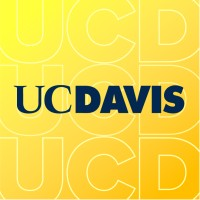

Kavin Rajasekaran
Student, software engineer, cryptography researcher
I'm a Master's student in Electrical & Computer Engineering at UC Davis and a Computer Science & Engineering graduate from UC Merced, with a passion for developing efficient and effective solutions.
If you'd like to chat, feel free to reach out!
Experience
-
Lawrence Livermore National Laboratory
Data Science Intern - DSC
July 2025
Implemented a ConvLSTM U-Net in PyTorch that predicts amodal RGB content in videos behind occluded objects using only 2-D convolutions. Built a custom dataset loader that walks five MOVi-MC-AC scenes and assembles about 2,400 train and 400 validation sequences per object. Trained the model across various scenes with a mixed L1 + MSE + SSIM loss and automatic checkpoint saving. Wrote utilities to export GIF/MP4 visualizations and to report PSNR, IoU, and Dice scores for quick debugging.
-
Semcorel, Inc.
Software Engineer Intern
September 2024 – January 2025
I launched a retrieval-augmented system integrated into an iOS app, combining a chatbot with Python, Llama 3.2, LangChain, and SentenceTransformers to assist seniors in smartwatch troubleshooting, reducing response time to under 3 seconds.
-
UC Merced EECS Department
Systems & Cryptography Research
May 2024 – January 2025
Working under Dr. Qian Wang, I engineered high-performance implementations of SPHINCS+ digital signatures by parallelizing core components with AVX512, achieving a 56% runtime reduction over the AVX2 baseline. I also co-authored the peer-reviewed paper "Exploring Parallel Implementation of SPHINCS+ using Advanced Vector Extensions (AVX) Sets," accepted at ISQED 2025.
-
UC Merced
Electrical Engineering Undergraduate Teaching Assistant
August 2024 – December 2024
I designed course curriculum and slides for a new Electrical Engineering course, including an ML project using MNIST data. I mentored 70+ students in Electrical Engineering lectures, assisting with Python, C++, MATLAB, and open circuit design.
-
UC Merced
Physics Undergraduate Teaching Assistant
August 2024 – December 2024
I assisted in teaching introductory physics courses, helping students understand fundamental concepts and problem-solving techniques. I conducted office hours and review sessions to support student learning.
Education
-

University of California, Davis
Master of Science in Electrical & Computer Engineering
Expected: December 2026
Specializing in embedded systems and machine learning acceleration with a focus on hardware optimizations for AI applications.
-
University of California, Merced
Bachelor of Science in Computer Science & Engineering
Graduated: December 2024
Relevant coursework: Data Structures, Algorithm Analysis, Operating Systems, Artificial Intelligence, Statistics in R, Database Systems, Mobile Development. Active member of the Association for Computing Machinery and Google Developer Student Club.